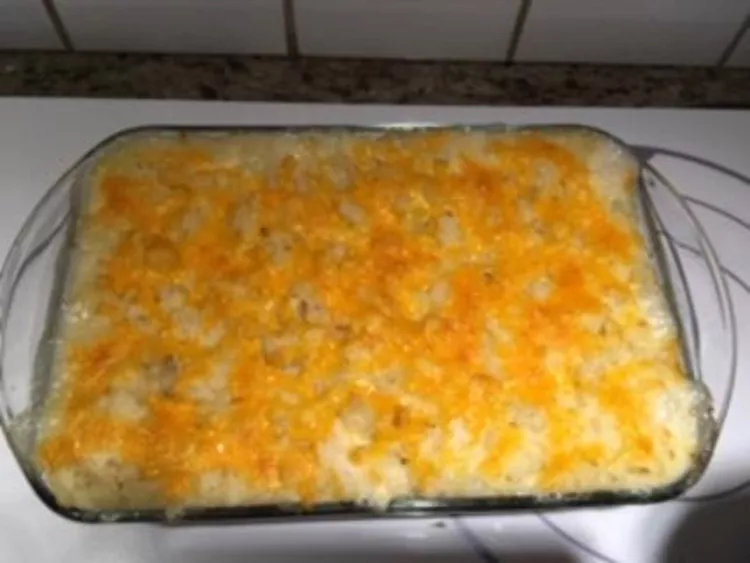

Odins Recipes
The pie is usually made with fresh and smoked fish (for example, cod, haddock, salmon or halibut) or seafood in a white sauce or cheddar cheese sauce made using the milk the fish was poached in. Hard-boiled eggs are a common additional ingredient. Parsley or chives are sometimes added to the sauce.
Learn how to cook bangers and mash with this delicious and irresistible recipe that everyone loves. It pairs creamy potatoes, crunchy onions, smooth gravy, and yummy sausages.

Mom's spaghetti Bolognese recipe was passed on from my Italian grandfather. The ultimate comfort food. Leftovers freeze nicely! To make this recipe more authentic, you can use a mixture of ground veal, pork, and beef. You can also substitute 1/2 cup of red wine for the balsamic vinegar.